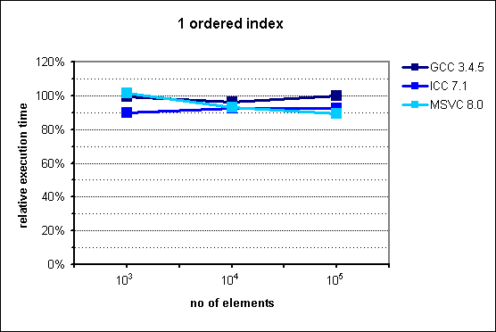
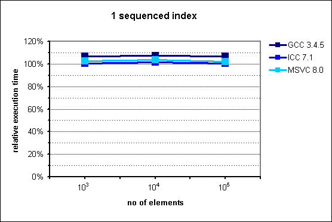
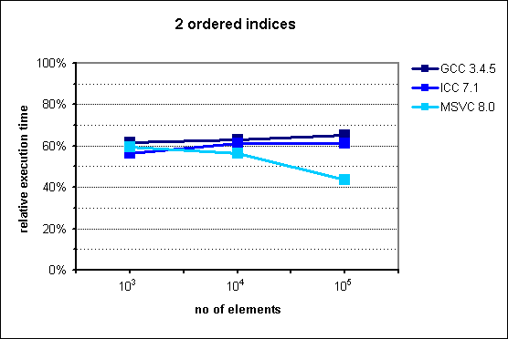
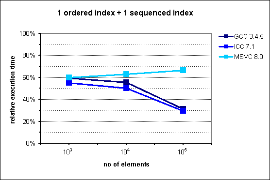
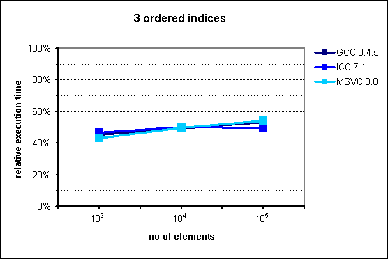
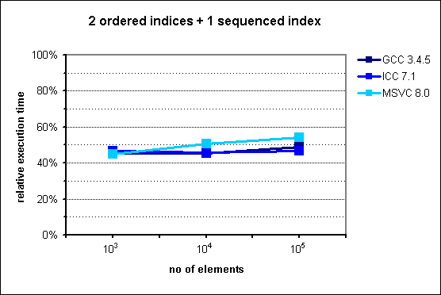

Boost.MultiIndex 性能Boost.MultiIndex 性能
Boost.MultiIndex 性能Boost.MultiIndex 性能当需要多索引能力时, Boost.MultiIndex 帮助程序员免去手工构造繁琐的容器组合. 不仅如此, 它在空间与时间消耗两方面都十分高效. 空间节省源于底层数据结构的紧凑表示——每个元素只需一个节点. 至于时间效率, Boost.MultiIndex 大量运用元编程技术, 为每个索引的基本操作生成极为紧凑的成员函数实现: 对于拥有两个或更多索引的 multi_index_container, 其运行时间可以缩短到涉及多个 STL 容器的手工模拟的一半.
multi_index_container关于 用 multi_index_container 模拟标准容器的一节展示了单索引 multi_index_container 与某些 STL 容器的等价性. 现在我们来集中讨论如何用标准容器的恰当组合来模拟具有两个或更多索引的 multi_index_container.
考虑 multi_index_container 的如下实例化:
typedef multi_index_container< int, indexed_by< ordered_unique<identity<int> >, ordered_non_unique<identity<int>, std::greater<int> >, > > indexed_t;
indexed_t 在 int 类型的元素上维护两个内部索引. 若仅依靠标准 STL 容器来模拟这一数据结构, 初步可以采用以下类型:
// dereferencing compare predicate template<typename Iterator,typename Compare> struct it_compare { bool operator()(const Iterator& x,const Iterator& y)const { return comp(*x,*y); } private: Compare comp; }; typedef std::set<int> manual_t1; // equivalent to indexed_t's index #0 typedef std::multiset< const int*, it_compare< const int*, std::greater<int> > > manual_t2; // equivalent to indexed_t's index #1
其中 manual_t1 是保存实际元素的“基础”容器, manual_t2 则存储指向 manual_t1 元素的指针. 不过这一方案的效率相当低: 尽管向数据结构中插入十分简单:
而删除操作则相反, 需要对数查找, 而manual_t1 c1; manual_t2 c2; // insert the element 5 manual_t1::iterator it1=c1.insert(5).first; c2.insert(&*it1);
indexed_t 以常量时间删除: // remove the element pointed to by it2 manual_t2::iterator it2=...; c1.erase(**it2); // watch out! performs in logarithmic time c2.erase(it2);
正确的做法是让第二个容器保存的不是原始指针, 而是 manual_t1::iterator 类型的元素:
typedef std::set<int> manual_t1; // equivalent to indexed_t's index #0 typedef std::multiset< manual_t1::iterator, it_compare< manual_t1::iterator, std::greater<int> > > manual_t2; // equivalent to indexed_t's index #1
如此一来, 插入与删除便可以以与 indexed_t 等价的复杂度界完成:
manual_t1 c1; manual_t2 c2; // insert the element 5 manual_t1::iterator it1=c1.insert(5).first; c2.insert(it1); // remove the element pointed to by it2 manual_t2::iterator it2=...; c1.erase(*it2); // OK: constant time c2.erase(it2);
这种构造可以以直接的方式扩展到多于两个索引的情形. 下文中, 我们将把 multi_index_container 的实例化与此类手工模拟进行比较.
multi_index_container 相对其手工模拟在空间消耗上的收益可以用非常简单的理论分析来说明. 为简单起见, 我们将忽略对齐问题 (总体而言对齐问题有利于 multi_index_container) .
multi_index_container 在 N 个索引下的节点保存元素值外加 N 个头结构, 后者包含每个索引的链接信息. 因此节点大小为
SI = e + h0 + ··· + hN-1, 其中
e = 元素的大小,
hi = 第 i 个头结构的大小.
另一方面, 手工模拟为每个元素分配 N 个节点, 第一个节点保存元素本身, 其余节点存储指向“基础”容器的迭代器. 实际上, 迭代器只保存一个指向其关联节点的原始指针, 因此其大小与元素类型无关. 把所有开销相加, 手工模拟中每个元素所占的空间为
SM = (e + h0) + (p + h1) + ··· + (p + hN-1) = SI + (N-1)p, 其中
p = 一个指针的大小.
multi_index_container 相对其手工模拟所占内存的比例就是 SI / SM, 于是可以表示为:
SI / SM = SI / (SI + (N-1)p).
该公式表明, 随着索引数目的增加, multi_index_container 在内存消耗方面更具优势. 这里隐含地假设 multi_index_container 索引节点的头结构与 STL 容器中对应部分大小相同; 但在一种特定情形下这往往不成立: 有序索引使用了一种 空间优化技术, 而 std::set 的许多实现并不具备该技术, 这为 multi_index_container 带来每个有序索引一个系统字长的额外优势. 考虑这一事实后, 前述公式可以调整为:
SI / SM = SI / (SI + (N-1)p + Ow),
其中 O 是容器的有序索引数目, w 是系统字长 (在 32 位架构上通常为 4 字节) .
上述考虑忽略了一个实践上极为重要的方面: 与手工模拟所构建的众多不同大小的节点相比, multi_index_container 为每个元素只分配一个节点, 这会减少内存碎片, 从而可能带来更多可用内存和更好的性能.
从计算复杂度 (即 big-O 刻画) 的角度看, multi_index_container 与其对应的手工模拟是等价的: 向 multi_index_container 插入元素可归约为对各索引的基本插入操作的简单组合, 删除亦然. 因此, 我们最多只能期望执行时间按大致恒定的因子缩短 (或增长) . 后文将看到, 对于拥有两个或更多索引的 multi_index_container, 这一缩减可以非常显著.
在只有单个索引的 multi_index_container 这一特殊情形下, 最终性能大致与相应的 STL 容器相当: 测试表明相对 STL 至多有可忽略的退化, 某些情况下甚至还有小幅改进.
参见测量所用的 源代码.
为了评估 multi_index_container 的效率, 以下基本算法
multi_index_container<...> c; for(int i=0;i<n;++i)c.insert(i); for(iterator it=c.begin();it!=c.end();)c.erase(it++);
针对 multi_index_container 的不同实例化, 在 n 为 1,000、10,000 和 100,000 的取值下进行了测量, 并将其执行时间与基于 STL 容器的相应数据结构手工模拟的等价算法进行了比较. 下表描述了所用的测试环境.
| 编译器 | 设置 | 操作系统与 CPU |
|---|---|---|
| GCC 3.4.5 (mingw special) | -O3 |
Windows 2000 Pro, P4 1.5 GHz, 256 MB RAM |
| Intel C++ 7.1 | 默认发布设置 | Windows 2000 Pro, P4 1.5 GHz, 256 MB RAM |
| Microsoft Visual C++ 8.0 | 默认发布设置, _SECURE_SCL=0 |
Windows XP, P4 Xeon 3.2 GHz, 1 GB RAM |
相对内存消耗 (即 multi_index_container 相对其手工模拟所分配的内存量) 由 multi_index_container 节点的大小除以构成模拟数据结构的所有容器的节点大小之和来确定.
测试了 multi_index_container 的如下实例化:
multi_index_container< int, indexed_by< ordered_unique<identity<int> > > >
其在功能上等价于 std::set<int>.
| GCC 3.4.5 | ICC 7.1 | MSVC 8.0 |
|---|---|---|
| 80% | 80% | 80% |
multi_index_container 配 1 个有序索引时的相对内存消耗.
内存用量的减少归因于 Boost.MultiIndex 有序索引所实现的优化技术, 如上文 所述.

multi_index_container 配 1 个有序索引时的性能.
有些出人意料, multi_index_container 的表现略优于 std::set. 对这种行为的一个很可能的解释是, multi_index_container 内存消耗更低, 从而带来更高的处理器缓存命中率. GCC 上的改进最小, 大概是因为该编译器优化器的质量较差, 掩盖了与缓存相关的收益.
测试了 multi_index_container 的如下实例化:
multi_index_container< int, indexed_by< sequenced<> > >
其在功能上等价于 std::list<int>.
| GCC 3.4.5 | ICC 7.1 | MSVC 8.0 |
|---|---|---|
| 100% | 100% | 100% |
multi_index_container 配 1 个序列索引时的相对内存消耗.
数据证实, 此处 multi_index_container 节点与其 std::list 对应物的节点大小相同.

multi_index_container 配 1 个序列索引时的性能.
multi_index_container 未能达到其 STL 对应物的性能, 但数据差距不大. 同样, 最差的结果来自 GCC, 退化最多达 7%, 而 ICC 和 MSVC 则不超过区区 5%.
测试了 multi_index_container 的如下实例化:
multi_index_container< int, indexed_by< ordered_unique<identity<int> >, ordered_non_unique<identity<int> > > >
| GCC 3.4.5 | ICC 7.1 | MSVC 8.0 |
|---|---|---|
| 70% | 70% | 70% |
multi_index_container 配 2 个有序索引时的相对内存消耗.
这些结果与理论公式相符, 此时 SI = 28, N = O = 2 且 p = w = 4.

multi_index_container 配 2 个有序索引时的性能.
实验结果证实了我们的假设: multi_index_container 以大致恒定的因子改善执行时间, 此处该因子约为 60%. 至于 multi_index_container 在 MSVC 上当 n=105 时优势反而更大, 则没有明显的解释.
测试了 multi_index_container 的如下实例化:
multi_index_container< int, indexed_by< ordered_unique<identity<int> >, sequenced<> > >
| GCC 3.4.5 | ICC 7.1 | MSVC 8.0 |
|---|---|---|
| 75% | 75% | 75% |
multi_index_container 配 1 个有序索引 + 1 个序列索引时的相对内存消耗.
这些结果与理论公式相符, 此时 SI = 24, N = 2, O = 1 且 p = w = 4.

multi_index_container 配 1 个有序索引 + 1 个序列索引时的性能.
当 n=103 和 n=104 时, 结果与我们的理论分析一致, 相对基于 STL 的手工模拟表现出 50-65% 的恒定因子改进. 有趣的是, 当 n=105 时, GCC 和 ICC 这两个编译器的加速比反而更高. 为排除虚假结果, 测试已运行多次, 结果相似. 两个测试环境部署在同一台机器上, 这表明该现象可能存在某种与操作系统相关的原因.
测试了 multi_index_container 的如下实例化:
multi_index_container< int, indexed_by< ordered_unique<identity<int> >, ordered_non_unique<identity<int> >, ordered_non_unique<identity<int> > > >
| GCC 3.4.5 | ICC 7.1 | MSVC 8.0 |
|---|---|---|
| 66.7% | 66.7% | 66.7% |
multi_index_container 配 3 个有序索引时的相对内存消耗.
这些结果与理论公式相符, 此时 SI = 40, N = O = 3 且 p = w = 4.

multi_index_container 配 3 个有序索引时的性能.
此情形下的执行时间比基于 STL 的同一数据结构手工模拟低 45% 至 55%.
测试了 multi_index_container 的如下实例化:
multi_index_container< int, indexed_by< ordered_unique<identity<int> >, ordered_non_unique<identity<int> >, sequenced<> > >
| GCC 3.4.5 | ICC 7.1 | MSVC 8.0 |
|---|---|---|
| 69.2% | 69.2% | 69.2% |
multi_index_container 配 2 个有序索引 + 1 个序列索引时的相对内存消耗.
这些结果与理论公式相符, 此时 SI = 36, N = 3, O = 2 且 p = w = 4.

multi_index_container 配 2 个有序索引 + 1 个序列索引时的性能.
与预期相符, 执行时间以相当恒定的因子得到改善, 范围在 45% 至 55% 之间.
我们已经证明, multi_index_container 在空间与时间效率上都优于由 STL 容器手工组合而成的等价数据结构. 索引数目越多, 这一改进越明显.
在用单索引 multi_index_container 替代标准容器的特殊情形下, Boost.MultiIndex 的性能与所测 STL 实现相当, 甚至在空间消耗与执行时间两方面还能带来一些改进.
修订于 November 7th 2025
版权所有 © 2003-2025 Joaquín M López Muñoz. 按 Boost 软件许可 1.0 版 (Boost Software License, Version 1.0) 分发. (随附文件 LICENSE_1_0.txt 或复制于 http://www.boost.org/LICENSE_1_0.txt)